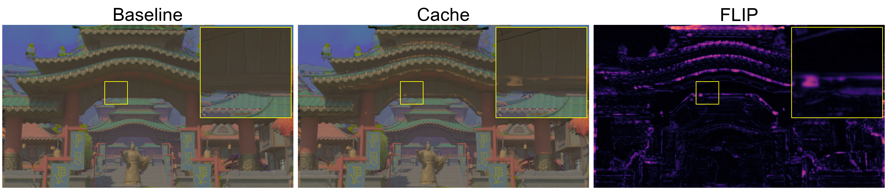
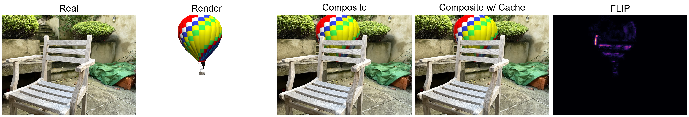

Results
ReFrame applies to 72% of inferences on average with a low sensitivity setting, resulting in a 40% reduction in FLOPs and 1.6× speedup in inference latency.
| Policy | Workload | Scene | Skipped Frames ↑ |
Eliminated Enc-Dec FLOPs ↑ |
Speedup ↑ |
|---|---|---|---|---|---|
| Delta_H | FE | Sun Temple | 50% | 27% | 1.42 |
| Cyber Punk | 30% | 16% | 1.10 | ||
| Asian Village | 35% | 19% | 1.24 | ||
| SS | Sun Temple | 40% | 29% | 1.30 | |
| IC | Garden Chair | 13% | 6% | 1.05 | |
| Delta_L | FE | Sun Temple | 80% | 43% | 1.72 |
| Cyber Punk | 60% | 32% | 1.49 | ||
| Asian Village | 60% | 32% | 1.55 | ||
| SS | Sun Temple | 80% | 57% | 1.85 | |
| IC | Garden Chair | 79% | 34% | 1.20 |
Frame extrapolation example.

Supersampling example.

Image composition example.

FE: Frame extrapolation, SS: Supersampling, IC: Image composition